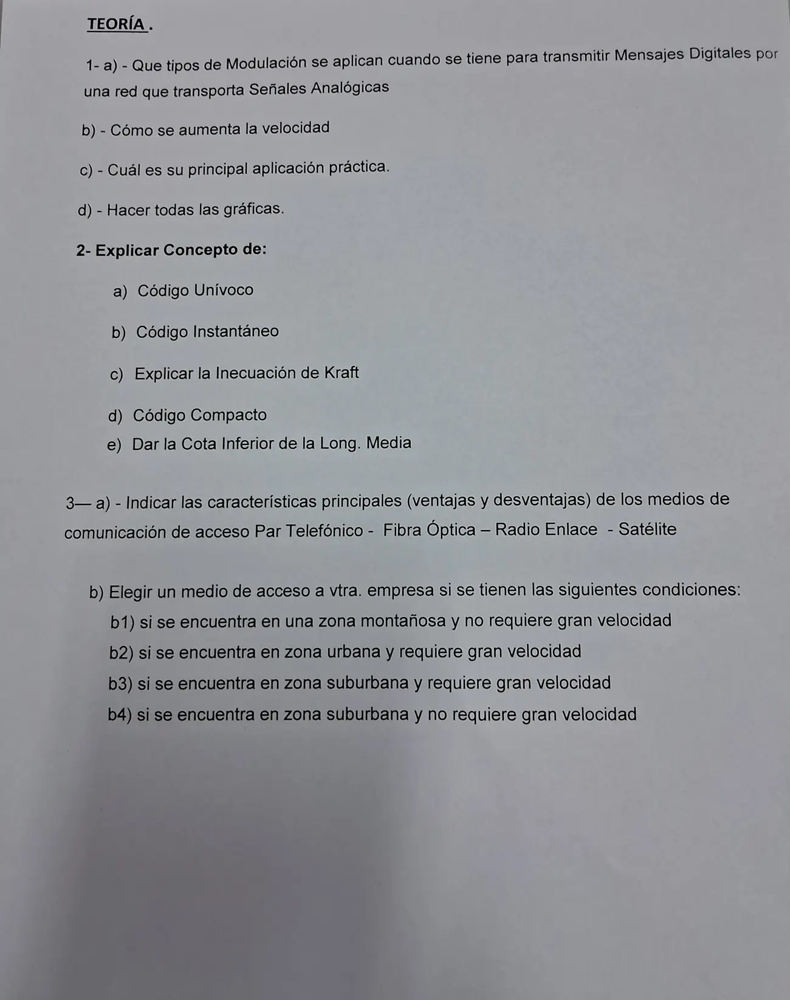

Final 04/04/2025, teoría
Final, 04/04/2025
Enunciado


Propuesta de respuesta
Respuesta no verificada. La propuso Luta Studios con inteligencia artificial y ningún docente la revisó. Puede tener errores.
1a. ASK, FSK y PSK. Son las maneras de mandar bits por un canal que transporta señales analógicas. En ASK cambia la amplitud, y el apunte aclara que no se usa actualmente. En FSK cambia la frecuencia. En PSK cambia la fase, y solo se demodula en forma coherente.
1b. Con modulación multinivel. Se usan más frecuencias en FSK o más fases en PSK, sin aumentar el ancho de banda del canal. Combinando amplitud y fase sale QAM o APSK. Con 2 amplitudes y 4 fases hay 8 estados, o sea 3 dígitos por símbolo.
1c. La computadora conectada por línea telefónica mediante un MODEM, modulador y demodulador.
1d. Las tres técnicas con los mismos bits.
2a. Un código es unívocamente decodificable si a cualquier secuencia de palabras código le corresponde una y sólo una secuencia de símbolos de la fuente.
2b. Un código es instantáneo si se puede decodificar cada palabra apenas llega, sin esperar el símbolo siguiente. La condición necesaria y suficiente para que un código sea instantáneo es que ninguna palabra del código coincida con el prefijo de otra. Con 0, 01, 011 y 0111 hay que esperar, porque 0 es prefijo de 01. Con 1, 01, 001 y 0001 no.
2c. Si los enteros satisfacen
es condición suficiente y necesaria para que exista al menos un código instantáneo de símbolos en su alfabeto con esas longitudes. No dice que cualquier código con esas longitudes sea instantáneo. S1=0, S2=00, S3=11 da y no es instantáneo, pero existe S1=0, S2=10, S3=11, que sí lo es.
2d. Dada la fuente , un código instantáneo aplicado a es compacto si su longitud media es igual o menor que la longitud media de todos los códigos instantáneos que puedan aplicarse a la misma fuente y al mismo alfabeto. Huffman construye uno.
2e. La longitud media de un código es mayor o igual que la entropía de la fuente dividida por el del número de símbolos del alfabeto código.
Nunca se puede obtener un código cuya longitud media sea menor que la entropía en unidades r-arias. La igualdad vale si para todo .
3a.
| Medio | Ventajas | Desventajas |
|---|---|---|
| Par telefónico | Bajo costo de contratación. Puede estar previamente cableado. Con módem HDSL alcanza para una organización pequeña en zona urbana | Ancho de banda limitado, altas tasas de error a altas velocidades, baja inmunidad al ruido y a la diafonía. La atenuación depende fuertemente de la frecuencia |
| Fibra óptica | Mucho mayor ancho de banda. Baja atenuación, con repetidores cada 50 km contra casi 5 km en cobre. No la afectan sobrecargas, interferencia electromagnética ni corrosivos. Difícil de intervenir | Requiere habilidades y se daña si se dobla mucho. Es unidireccional, y en ambos sentidos hacen falta dos fibras. Las interfaces cuestan más |
| Radio enlace | Relativamente barato. Dos torres pueden costar menos que enterrar 50 km de fibra. Con torres de 100 m los repetidores van a 80 km | Necesita visión directa y espacio para el mástil, unos 36 × 36 m para 30 m de altura. Desde unos 4 GHz la lluvia absorbe la señal. Sufre desvanecimiento por múltiples trayectorias |
| Satélite | Llega a lugares lejanos e inaccesibles, como zonas montañosas o selva, y sirve para ubicaciones transitorias. Las VSAT usan antenas de un metro o menos | Retardo, unos 270 ms en un GEO. Las bandas Ku y Ka sufren con la lluvia y el costo del equipo. Vida útil de unos 10 años |
3b. Los ejemplos del apunte suman espacio físico y segurización, que la consigna no da.
| Caso | Medio | Ejemplo del apunte |
|---|---|---|
| b1) Montañosa, sin gran velocidad | Satelital | 8, organización pequeña en zona montañosa o selva con ancho de banda bajo |
| b2) Urbana, con gran velocidad | Fibra óptica, en anillo para segurizar | 2, organización madura en zona urbana con ancho de banda alto |
| b3) Suburbana, con gran velocidad | Fibra óptica, en anillo para segurizar | 6, organización en zona suburbana con ancho de banda alto |
| b4) Suburbana, sin gran velocidad | Radio enlace, si hay espacio físico. Con segurización, radio enlace y satelital | 4 y 5, organización en zona suburbana con ancho de banda bajo |
Respuesta no verificada. Puede tener errores.
Se armó con Resumen del Final (consignas del 04/04/2025), del 1° parcial, Códigos y Medios de transmisión, y del 2° parcial, Modulación digital y Elección del medio de acceso. Las ventajas del par telefónico salen del apunte «3 - Medios de transmisión», p. 4.
Quedó en duda: En 3b supuse espacio físico para el radio enlace y segurización para la fibra en anillo, como los ejemplos del apunte. Si la empresa no tiene espacio, el apunte usa satélite. En 1c el apunte nombra una sola aplicación, el MODEM. En 3a el material describe el par trenzado en general, no el par telefónico de acceso en particular.
¿Cómo te fue?
Marcá cada tema del examen.
- modulacionModulación para mensajes digitales, en Final
- codigosCódigos, en Final
- mediosPar trenzado, en 1° parcial
- accesoLos ejemplos del apunte, en 2° parcial